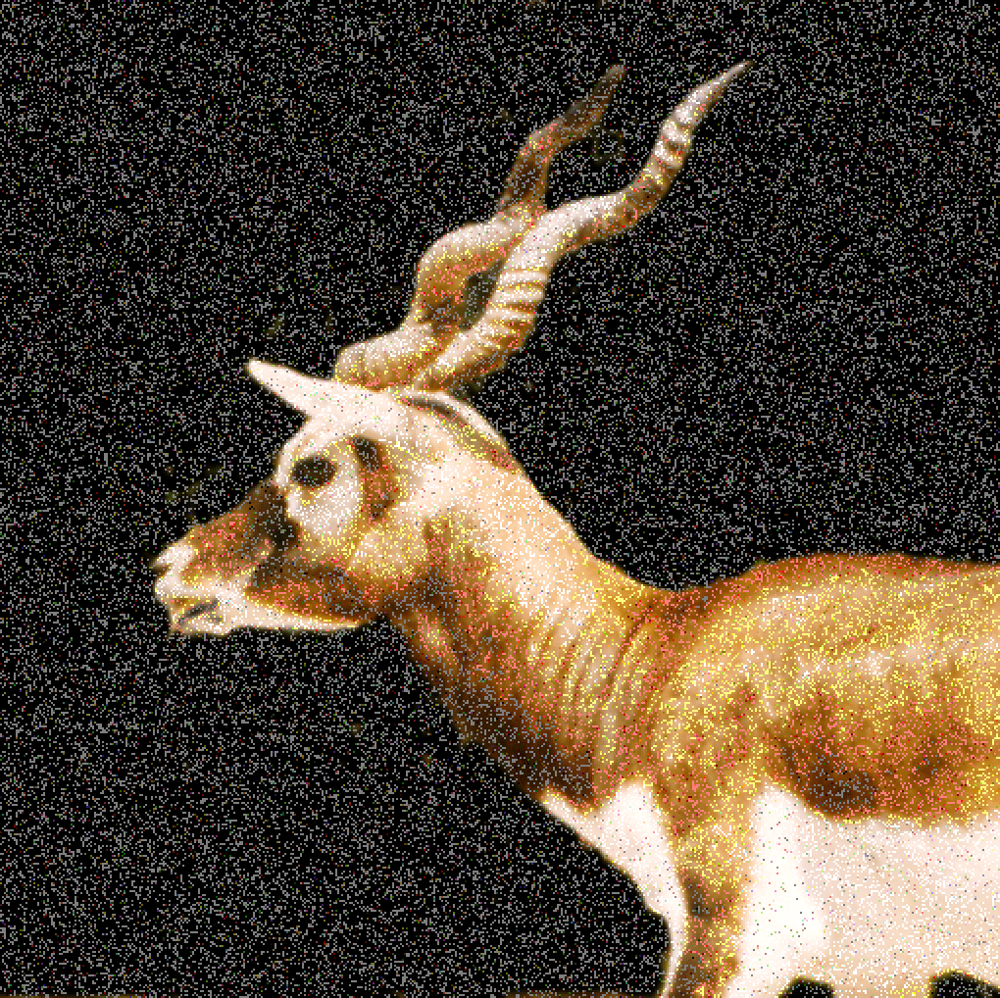

Img A - Container ImageImg B - Image to be encoded
Img C - Output image after encoding Img B into Img A using 2 bits of the RGB values. Looks almost identical to the original image.Img D - Output image after decoding Img C. Some quality has been lost.

Img E - Output image after encoding Img B into Img A using 7 bits of the RGB values. Alteration can be seen.
Img F - Output image after decoding Img E. Looks almost identical to the original image.